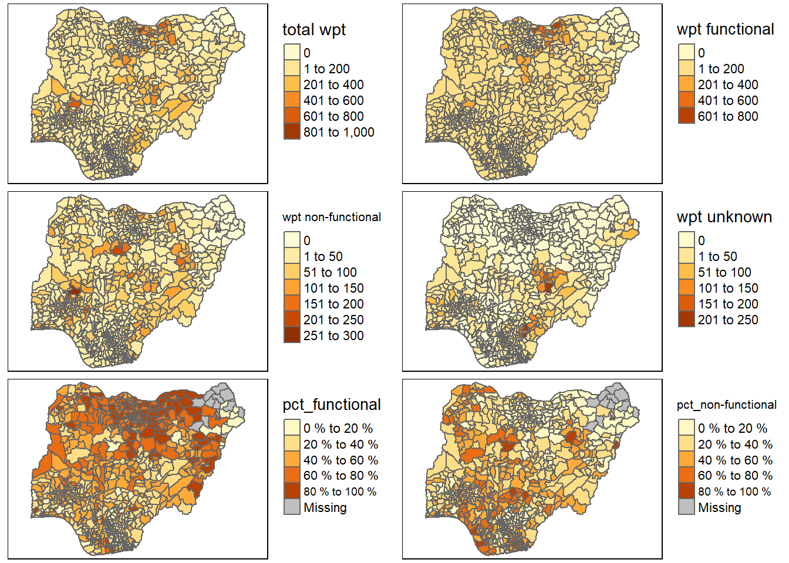

pacman::p_load(sf, tidyverse, spdep, tmap, funModeling)In-class Exercise 2
Objective
To reveal the spatial distribution of Functional and Non-functional water points in Nigeria derived from WPdx data using geospatial analytic techniques.
Getting Started
The code chunk below will install and load tidyverse, sf, spdep, tmap and funModeling packages.
Importing Geospatial Data
Importing Nigeria LGA boundary shapefile
This code chunk will import ESRI shapefile of Nigeria obtained from geoBoundaries into R.
nigeria_sf <- st_read(dsn="data/Nigeria",
layer="geoBoundaries-NGA-ADM2",
crs = 4326) %>%
st_transform(crs = 26391)Reading layer `geoBoundaries-NGA-ADM2' from data source
`D:\SMU\ISSS624 - Applied Geospatial Analytics\exercises\leecheetian\ISSS624\In-class_Ex\In-class_Ex2\data\Nigeria'
using driver `ESRI Shapefile'
Simple feature collection with 774 features and 5 fields
Geometry type: MULTIPOLYGON
Dimension: XY
Bounding box: xmin: 2.668534 ymin: 4.273007 xmax: 14.67882 ymax: 13.89442
Geodetic CRS: WGS 84Importing water points csv aspatial data
This code chunk will import the water points data obtained from WPdx into R, filtered by Nigeria only.
nigeria_csv <- read_csv("data/WPdx+/geo_export.csv") %>%
filter(`#clean_country_name` == "Nigeria")Warning: One or more parsing issues, call `problems()` on your data frame for details,
e.g.:
dat <- vroom(...)
problems(dat)Rows: 406566 Columns: 70
── Column specification ────────────────────────────────────────────────────────
Delimiter: ","
chr (43): #source, #report_date, #status_id, #water_source_clean, #water_sou...
dbl (23): row_id, #lat_deg, #lon_deg, #install_year, #fecal_coliform_value, ...
lgl (4): #rehab_year, #rehabilitator, is_urban, latest_record
ℹ Use `spec()` to retrieve the full column specification for this data.
ℹ Specify the column types or set `show_col_types = FALSE` to quiet this message.This code chunk converts the CSV data into a simple feature data frame with geometry information using the st_as_sf() function of the sf package.
nigeria_wp_sf <- st_as_sf(nigeria_csv,
coords = c("#lon_deg", "#lat_deg"),
crs = 4326) %>%
st_transform(crs = 26391)The following code chunk uses the write_rds() method of the readr package to save the extracted data into an output file in rds data format:
wp_nga <- write_rds(nigeria_wp_sf, "data/rds/wp_nga.rds")wp_ngaSimple feature collection with 95008 features and 68 fields
Geometry type: POINT
Dimension: XY
Bounding box: xmin: 32536.82 ymin: 33461.24 xmax: 1292096 ymax: 1091052
Projected CRS: Minna / Nigeria West Belt
# A tibble: 95,008 × 69
row_id `#source` #repo…¹ #stat…² #wate…³ #wate…⁴ #wate…⁵ #wate…⁶ #faci…⁷
* <dbl> <chr> <chr> <chr> <chr> <chr> <chr> <chr> <chr>
1 429068 GRID3 08/29/… Unknown <NA> <NA> Tapsta… Tapsta… Improv…
2 222071 Federal Minis… 08/16/… Yes Boreho… Well Mechan… Mechan… Improv…
3 160612 WaterAid 12/04/… Yes Boreho… Well Hand P… Hand P… Improv…
4 160669 WaterAid 12/04/… Yes Boreho… Well <NA> <NA> Improv…
5 160642 WaterAid 12/04/… Yes Boreho… Well Hand P… Hand P… Improv…
6 160628 WaterAid 12/04/… Yes Boreho… Well Hand P… Hand P… Improv…
7 160632 WaterAid 12/04/… Yes Boreho… Well Hand P… Hand P… Improv…
8 642747 Living Water … 10/03/… Yes Boreho… Well Mechan… Mechan… Improv…
9 642456 Living Water … 10/03/… Yes Boreho… Well Hand P… Hand P… Improv…
10 641347 Living Water … 03/28/… Yes Boreho… Well Hand P… Hand P… Improv…
# … with 94,998 more rows, 60 more variables: `#clean_country_name` <chr>,
# `#clean_adm1` <chr>, `#clean_adm2` <chr>, `#clean_adm3` <chr>,
# `#clean_adm4` <chr>, `#install_year` <dbl>, `#installer` <chr>,
# `#rehab_year` <lgl>, `#rehabilitator` <lgl>, `#management_clean` <chr>,
# `#status_clean` <chr>, `#pay` <chr>, `#fecal_coliform_presence` <chr>,
# `#fecal_coliform_value` <dbl>, `#subjective_quality` <chr>,
# `#activity_id` <chr>, `#scheme_id` <chr>, `#wpdx_id` <chr>, …Data Wrangling
Recoding NA values into string
The code chunk below recodes all NA values in the #status_clean column into “Unknown” using the replace_na() function.
wp_nga <- read_rds("data/rds/wp_nga.rds") %>%
mutate(`#status_clean` = replace_na(`#status_clean`, "Unknown"))EDA
The code chunk below uses the freq() function of the funModeling package to display the distribution of the #status_clean column values in wp_nga dataset.
freq(data = wp_nga, input = "#status_clean")Warning: The `<scale>` argument of `guides()` cannot be `FALSE`. Use "none" instead as
of ggplot2 3.3.4.
ℹ The deprecated feature was likely used in the funModeling package.
Please report the issue at <https://github.com/pablo14/funModeling/issues>.
#status_clean frequency percentage cumulative_perc
1 Functional 45883 48.29 48.29
2 Non-Functional 29385 30.93 79.22
3 Unknown 10656 11.22 90.44
4 Functional but needs repair 4579 4.82 95.26
5 Non-Functional due to dry season 2403 2.53 97.79
6 Functional but not in use 1686 1.77 99.56
7 Abandoned/Decommissioned 234 0.25 99.81
8 Abandoned 175 0.18 99.99
9 Non functional due to dry season 7 0.01 100.00Extracting Water Points Data
Extracting functional water points
The filter() function of the dplyr package will be used to select the functional water points from those rows whose #status_clean values are “Functional”, “Functional but needs repair” and “Functional but not in use”.
wpt_functional <- wp_nga %>%
filter(`#status_clean` %in% c("Functional",
"Functional but needs repair",
"Functional but not in use"))freq(data = wpt_functional, input = "#status_clean")
#status_clean frequency percentage cumulative_perc
1 Functional 45883 87.99 87.99
2 Functional but needs repair 4579 8.78 96.77
3 Functional but not in use 1686 3.23 100.00Extracting non-functional water points
The filter() function of the dplyr package will again be used to select the non-functional water points from those rows whose #status_clean values are “Non-Functional”, “Non-Functional due to dry season”, “Abandoned/Decommissioned”, “Abandoned” and “Non functional due to dry season”.
wpt_nonfunctional <- wp_nga %>%
filter(`#status_clean` %in% c("Non-Functional",
"Non-Functional due to dry season",
"Non functional due to dry season",
"Abandoned/Decommissioned",
"Abandoned"))freq(data = wpt_nonfunctional, input = "#status_clean")
#status_clean frequency percentage cumulative_perc
1 Non-Functional 29385 91.25 91.25
2 Non-Functional due to dry season 2403 7.46 98.71
3 Abandoned/Decommissioned 234 0.73 99.44
4 Abandoned 175 0.54 99.98
5 Non functional due to dry season 7 0.02 100.00Extracting water points with Unknown class
Lastly, the remaining water points with “Unknown” status are grouped using the same filter() function.
wpt_unknown <- wp_nga %>%
filter(`#status_clean` == "Unknown")Performing Point-in-Polygon Count
nga_wp <- nigeria_sf %>%
mutate(`total wpt` = lengths(
st_intersects(nigeria_sf, wp_nga))) %>%
mutate(`wpt functional` = lengths(
st_intersects(nigeria_sf, wpt_functional))) %>%
mutate(`wpt non-functional` = lengths(
st_intersects(nigeria_sf, wpt_nonfunctional))) %>%
mutate(`wpt unknown` = lengths(
st_intersects(nigeria_sf, wpt_unknown)))Saving the Analytical Data Table
nga_wp <- nga_wp %>%
mutate(pct_functional = `wpt functional`/`total wpt`) %>%
mutate(`pct_non-functional` = `wpt non-functional`/`total wpt`)
nga_wpSimple feature collection with 774 features and 11 fields
Geometry type: MULTIPOLYGON
Dimension: XY
Bounding box: xmin: 28879.72 ymin: 30292.37 xmax: 1343798 ymax: 1094244
Projected CRS: Minna / Nigeria West Belt
First 10 features:
shapeName Level shapeID shapeGroup shapeType
1 Aba North ADM2 NGA-ADM2-72505758B79815894 NGA ADM2
2 Aba South ADM2 NGA-ADM2-72505758B67905963 NGA ADM2
3 Abadam ADM2 NGA-ADM2-72505758B57073987 NGA ADM2
4 Abaji ADM2 NGA-ADM2-72505758B61968000 NGA ADM2
5 Abak ADM2 NGA-ADM2-72505758B39432389 NGA ADM2
6 Abakaliki ADM2 NGA-ADM2-72505758B36739173 NGA ADM2
7 Abeokuta North ADM2 NGA-ADM2-72505758B86358915 NGA ADM2
8 Abeokuta South ADM2 NGA-ADM2-72505758B56925175 NGA ADM2
9 Abi ADM2 NGA-ADM2-72505758B1616690 NGA ADM2
10 Aboh-Mbaise ADM2 NGA-ADM2-72505758B78555816 NGA ADM2
geometry total wpt wpt functional wpt non-functional
1 MULTIPOLYGON (((552560.3 12... 17 7 9
2 MULTIPOLYGON (((545153.6 12... 71 29 35
3 MULTIPOLYGON (((1245549 106... 0 0 0
4 MULTIPOLYGON (((510602.3 57... 57 23 34
5 MULTIPOLYGON (((598086 1218... 48 23 25
6 MULTIPOLYGON (((663801.7 25... 233 82 42
7 MULTIPOLYGON (((81132.88 37... 34 16 15
8 MULTIPOLYGON (((98464.54 34... 119 72 33
9 MULTIPOLYGON (((635478 2187... 152 79 62
10 MULTIPOLYGON (((543608.8 15... 66 18 26
wpt unknown pct_functional pct_non-functional
1 1 0.4117647 0.5294118
2 7 0.4084507 0.4929577
3 0 NaN NaN
4 0 0.4035088 0.5964912
5 0 0.4791667 0.5208333
6 109 0.3519313 0.1802575
7 3 0.4705882 0.4411765
8 14 0.6050420 0.2773109
9 11 0.5197368 0.4078947
10 22 0.2727273 0.3939394The above derived data will be saved as a RDS file for subsequent geospatial analysis of the water points.
write_rds(nga_wp, "data/rds/nga_wp.rds")Visualizing the Spatial Distribution of Water Points
nga_wp <- read_rds("data/rds/nga_wp.rds")
total <- qtm(nga_wp, "total wpt") +
tm_layout(legend.outside = TRUE)
wp_functional <- qtm(nga_wp, "wpt functional") +
tm_layout(legend.outside = TRUE)
wp_nonfunctional <- qtm(nga_wp, "wpt non-functional") +
tm_layout(legend.outside = TRUE)
unknown <- qtm(nga_wp, "wpt unknown") +
tm_layout(legend.outside = TRUE)
pct_functional <- qtm(nga_wp, "pct_functional") +
tm_layout(legend.outside = TRUE, legend.format = list(fun=function(x) paste0(formatC(x * 100, digits=0, format="f"), " %")))
pct_nonfunctional <- qtm(nga_wp, "pct_non-functional") +
tm_layout(legend.outside = TRUE, legend.format = list(fun=function(x) paste0(formatC(x * 100, digits=0, format="f"), " %")))
tmap_arrange(total, wp_functional, wp_nonfunctional, unknown, pct_functional, pct_nonfunctional, asp=1, ncol=2)Some legend labels were too wide. These labels have been resized to 0.64, 0.64, 0.64, 0.58. Increase legend.width (argument of tm_layout) to make the legend wider and therefore the labels larger.
Some legend labels were too wide. These labels have been resized to 0.64, 0.64, 0.64, 0.58. Increase legend.width (argument of tm_layout) to make the legend wider and therefore the labels larger.
From the above maps, it appears that the northern regions of Nigeria tend to enjoy both a higher count as well as percentage of functional water points, while the central and southern regions suffer a higher count and percentage of non-functional ones.